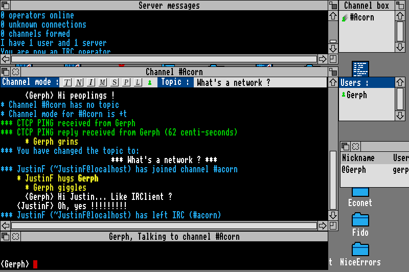

Magrathea can cater for you - we are not proud
Introduction
What is IRC ?
Basically, IRC allows you to chat to many people across the world
simultaneously through a group conference (channels) or on an individual
level (private messages). There's not much more to IRC than that usually,
except that you can transfer files across the world using it and, of course,
you meet an extraordinarily diverse group of people.
What programs are there ?
Currently the IRC scene is positively bustling with clients being written for
it. There are three known groups developing IRC clients (the program used to
access the IRC network) :
- iXRC, by QuadWorks
This will be a commercial IRC client, and is currently being written in C by
a group of four programmers who can usually be found 'hanging around on
#acorn' - Jonix, TheMage, Ajith. Currently nobody outside the group
has seen iXRC, though if the reports from it's writers are to be believed
it's definately going to be something to watch out for. Some of it's features
include writable icons for each channel or chat, dcc chat and send, BASIC
style scripting and a few 'secret' features.
- Rabbit, by RiscTaker
Whilst I haven't seen much of RiscTaker on IRC recently, I've heard some very
interesting things about Rabbit. Rabbit, it would appear, is a scripted IRC
client which can do much of the work of other applications with very little
configuration. However, information is sketchy, so I'm reluctant to say more.
- IRClient, by Matthew Godbolt
IRClient comes in two flavours - 0.16 and 0.22. The main reason for this is
that Matthew got fed up and re-wrote the whole application after 0.16 was
released. 0.16 uses a single window to perform all operations, but has dcc
chat and send working. 0.22 however uses multiple windows for chats, but
doesn't include dcc options.
Currently however, the only freely available clients are IRClient 0.16 and
0.22, so these tend to be the most often used.
So what is Magrathea ?
Magrathea is a set of scripts for IRClient 0.24 onwards. I hear you all
crying out that I just said IRClient had only got 0.16 and 0.22 versions -
the thing is that 0.24 (and recently 0.26) have yet to be released due to
their instability. When they are released however, you'll know pretty much
what to expect...
Ok, so what will I expect ?
IRClient 0.22 based around a script system for it's entire connection so it
is extremely expandable. The fact that the script is actually BASIC only
makes it easier to modify. It is BASIC of a sort, before you re-read
the last line. The entire BASIC language has been re-written in Assembler by
Matthew simply to provide an easy to use programming interface for the
client. This in itself is pretty amazing (well, I think so), but
better still, the language has been improved.
An improvement to BASIC ?
One of the things about BASIC which makes it so difficult to expand is the
fact that you can't just replace one routine by another, whilst keeping the
functionality of the first - Overloading procedures and functions. When this
was first added it was thought that it would be just a novelty thing, however
this one thing has had enormous implications for the entire language.
For example, say you have a routine to display text in the window, with
the form PROCDisplay(message$,from$,window$). This is all fine
and dandy, and you've used it throughout your code. However, you suddenly
think it might be useful to have things logged to a file. With normal BASIC
it's not too hard, as you just do a search and replace for
PROCDisplay( and replace it with (for example)
PROCLog_Display(. But, if you have lots of libraries which use
the PROCDisplay routine you'll have to go through each of those
replacing the calls.
IRClient however, allows you to get around this much more simply. If you
include a routine in another library (or module as they are called) which is
also called PROCDisplay then it will be called before the
original routine. So you can quite happily output the message to the file
with something like :
o=OPENOUT("$.file")
BPUT#o,message$
and then stick on the end of the procedure a call to
PROC@(message$,from$,win$) which will pass the call onto the
original routine. Or more specifically, pass the call on to the routine
called prior to that module being loaded.
Before you start wondering how useful that is, I'll just mention a few of
the calls which I've used overloading to provide extensions :
PROCInitaliseModule
Every module has this procedure if it wishes to set up some variables for
itself. Since every module is called in turn this can lead to problems with
the dependancies.
FNOverload_ScriptInfo
Any major module (which provides functionality to the client) should contain
this function to return it's name.
PROCOverload_UnknownCommand
If the user enters an unknown command in a chat window it is passed to this
procedure. Each individual module can check the command against it's own list
of commands, process it if it recognises it, and pass the call on if it
doesn't.
PROCOverload_UnknownCTCPRequest
Whenever another client issues a CTCP (Client To Client Protocol - used for
encoding more complex functions) request to you, this routine is called and,
like the UnknownCommand call, it is processed by each to give them a chance
to reply and perform any actions necessary.
How fast is all this then ?
You've probably been wondering how fast this all runs whilst you are
connected, what with all this overloading and things. Well, I'm developing
Magrathea on my A5000 running it locally and over an intranet consisting of
an econet connection to another A5000
and through a slip connection to an amiga and to be quite honest it's not bad
at all. On that system I'll admit that IRClient actually runs faster than the
intranet link, but on the pipex connection I was using at home I was still
very much able to use the computer for other things (memory constraints
excepting).
What are we working on then ?
Recently, I redesigned the entire layout of the Magrathea directory such that
it's now very modular. Each extension module lives in a directory called
Modules, in directories containing their resources and possibly a dependancy
file.
Because of the way in which the overloads work, it isn't simply possible to
scan the Modules directory and load everything. When I did this I
found that those module which added extra features to other modules might not
start up in the right order and so the overloads wouldn't be performed. Thus,
I had to write a dependancy processor so that the modules can be loaded in
the correct order. Unfortunately, as you can add or remove modules now at any
time (and soon there will be a configuration option to install or remove
modules), it is possible that this could occur before you connect, or in the
time between disconnecting and re-connecting, this needs to be done at run
time.
Thus, we have a dependancy module living in the 'Default' directory, which
checks a file showing the dependancies, constructs a dependancy tree, loads
the files in the correct order and reports any loops and invalid dependancies
to you. Some may argue that this is a tad over the top for a simple IRC
client, but the way I've attempted to make the system modular means that
these horrible things must be included.
Go on then... What else ?
Other recent additions include a Scheduler module (which will allow you to
use PROCAddCallBack to ensure that you are called back after a
certain period), a Logs module (performing appoximately the code above), and
a Samples module (to play samples when particular events take place).
Yes... and ?
Oh, alright then, you've talked me into it, but don't tell anyone; this can
be our little secret, alright ?
Currently there are 20 individual modules, of which only some are actually
useful to the end user. Those of interest are :
Plus, of course there is the main IRCLib module which control the main
connection and the other subservient modules.
Lets see this thing in action then...
Well, I've told you what it does, so here's a view of IRC in use locally (I'm
paying the bills now, so I'm not on the modem !) :

Summary
As I'm sure you'll realise I haven't actually told you much about what the
scripts can do, and very little about how the programming works. There are
three very good reasons for this. One of them is that I don't want to give
the game away too much. The second is that there is a quite
exceptionally large amount of code and resources, and to describe even a
small fraction can take more time than I have to actually code them. The
third reason has escaped me - it's probably run off with the milkman if I
know it. Which I don't.
If you'd like to find out more about the IRClient programming language,
you can mail myself at
gerph@essex.ac.uk or Matthew at
matthew@xania.uk.org, but be warned
that we're both very busy with writing, and possibly even having a life as
well, so we're likely to be slow to respond.
Availability
IRClient version 0.22 which supports the BASIC programming language is
currently available from
his home page.
However, the Magrathea script is undergoing one or two major changes,
and so it won't be available for a few weeks yet. Hopefully it will be
released before the Acorn World show, as I don't want to be pestered by
people asking when it will be out whilst I wander around aimlessly.
This page is maintained by Justin Fletcher (Gerph@essex.ac.uk).
Last modified on 6th October 1996.